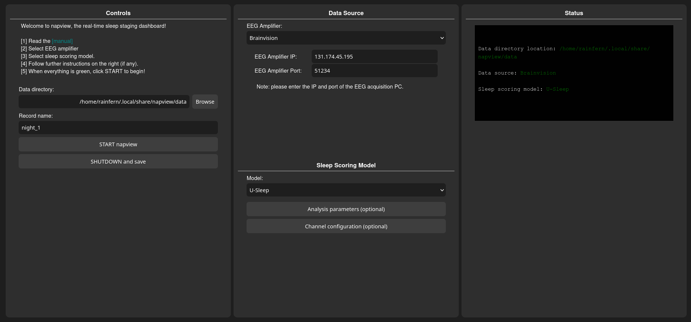

sleep stage visualizer for real-time EEG sleep experiments
https://github.com/paulzerr/napview- automated near-real-time sleep stage classification on live EEG data
- visualization interface for deep learning autoscoring
- displays sleep stage probabilities, and other signal features
- supports BrainVision and OpenBCI natively, plus any labstreaminglayer-compatible EEG system with real-time signal streaming capabilities
- is the night shift experimenter's friend
Installation
Option 1: Download NAPVIEW installer (Windows)
The easiest way to use napview on Windows is to download the portable self-extracting installer.
Note: due to the restrictive environment of Windows, you may see a "Search on app store" popup window. Click "No". You may also see the blue Smartscreen warning. In that case click "More info" and then "run anyway". You can also right-click NAPVIEW.exe, go to Properties and tick the box "Unblock". Should this fail, try installing via the standalone archive or pip (see below).
Option 2: Download NAPVIEW standalone (Windows)
Download the zip file, extract it to your preferred location, then double click run_napview.bat. This installation method can be useful on systems without admin priviledges.
Option 3: Install as Python package
First install e.g., Miniconda (an easy way to manage Python environments), and create a new environment.
Windows:
conda create -n napview-env python=3.11 -y
conda activate napview-envmacOS/Linux:
conda create -n napview-env python=3.11 -y
conda activate napview-envInstall NAPVIEW:
pip install napviewLaunch NAPVIEW:
conda activate napview-env
napview
Note: on first run, NAPVIEW may download model weight files via the NIDRA backend.
Graphical user interface (GUI) walkthrough
Step 1: Start NAPVIEW
Start NAPVIEW.exe or NAPVIEW.bat, or enter napview in a terminal. A browser tab should open (default url 127.0.0.1:8145) containing the napview control panel.
Step 2: Select data source
- Play back a sleep recording (simulator): use the integrated example recording or select a local EDF file to simulate a live stream. The file is copied into the session data directory.
- BrainVision: first enable RDA in BrainVision Recorder, connect EEG amp, and begin monitoring. Next, enter the IP and RDA port of the EEG acquisition PC. On Windows you can find the IP by opening a command prompt (CTRL+R, then type
cmd, press Enter. Next, typeipconfig, press Enter, and look for an entry under “Ethernet adapter” (or “Wireless LAN adapter Wi-Fi” if using Wi-Fi) labeled “IPv4 Address.” The number shown next to IPv4 Address is the IP address of the EEG acquisition PC. If you run NAPVIEW on the EEG acquisition PC, the IP is usually127.0.0.1:8145The port is typically51234. - OpenBCI: choose a board type and port (if required). Use Synthetic to test without hardware.
- Custom LSL stream: provide the name of the LSL stream (by default napview assumes
napview_EEG_stream).
Step 3: Optional channel configuration
- Select EEG channels to use. This is optional, as NAPVIEW will automatically detect channel type and will skip noisy or empty channels. During scoring all combinations between valid EEG and EOG channels are being used and scored individually. The final score is then determined by majority vote.
Step 4: Start streaming
Click START napview. A new tab opens with the real-time visualizer (typically at http://127.0.0.1:8245). Sleep stage probabilities stabilize after several minutes of data. Less than 5 minutes of data will likely not result in reliable estimates. A maximum of 15 minutes of past data will be used.
Step 5: Shutdown and save
Once the experiment session is finished, click SHUTDOWN and save to stop the session and write outputs.
Notes
- NAPVIEW expects a continuous EEG stream with channel names available from the stream metadata.
- Use the Simulator to test the system with a static EDF file.
- For BrainVision, make sure the RDA plugin is enabled and configured correctly.
- For custom LSL streams, make sure the stream type is EEG and the name matches the value in the GUI.
- It is recommended that you test the system first with the Simulator, then with an EEG amp connected without a participant, and finally with an awake participant. If everything works as expected you are now prepared to use NAPVIEW during an overnight session.
-
NAPVIEW uses the NIDRA backend for real-time scoring. The default staging model is U-Sleep, which has been validated in large multi-center datasets. For detailed performance metrics, refer to the original U-Sleep publication:
U-Sleep: resilient high-frequency sleep staging (Perslev et al., 2021)
FAQ & troubleshooting
GUI issues
Q: The GUI did not open.
A: Check the terminal output or for the correct URL (normally http://127.0.0.1:8145) and enter it manually in the browser. Otherwise check the logs, which should be in your user directory, e.g. C:\Users\
Q: The visualizer tab is empty or only shows a text message.
A: This usually means the data stream has not started or there is no incoming data. Confirm the data source and check the status panel for red warnings. Otherwise check the logs.
Q: My BrainVision EEG amp does not connect.
A: Verify the RDA plugin is enabled and the IP/port are correct.
Q: Custom LSL stream not found.
A: Ensure the stream is running, the stream name matches exactly, and the stream type is EEG.
How to cite NAPVIEW
If you use NAPVIEW in your research, please cite the NAPVIEW repository and the underlying models.
1. Citing NAPVIEW
Zerr, P. (2025). napview: real-time sleep scoring and analysis visualizer. GitHub. https://github.com/paulzerr/napview
2. Citing U-Sleep
Perslev, M., et al. (2021). U-Sleep: resilient high-frequency sleep staging. NPJ Digital Medicine.
License
This project is released under the BSD-3 Clause License.
Contact
For questions, bug reports, or feedback, please contact Paul Zerr at paul.zerr@donders.ru.nl.